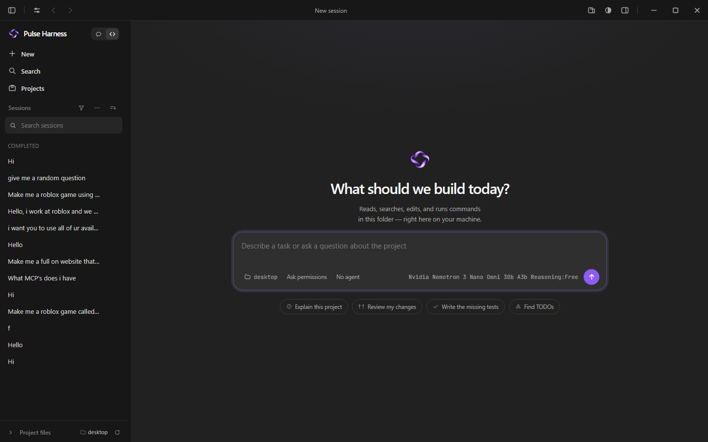

Reads the whole context
STAR.md, AGENTS.md, PULSE.md, project settings, git history, skills and knowledge all reach the model before it acts.
Pulse Harness is a local-first coding agent and chat assistant. Bring your own model, connect the tools you already use, and keep every key, file and session on your machine.

Pulse can read your project, make a plan, edit real files, run the tests and prove the result. Chat is for thinking; Code is for doing.
STAR.md, AGENTS.md, PULSE.md, project settings, git history, skills and knowledge all reach the model before it acts.
Targeted edits, multi-file changes, a real diff review and a safe revert. Every change is yours to inspect.
Runs your own test command, starts the server, checks the output and reports exactly what it verified.
Outlook, Slack, Notion, Linear, GitHub, Canvas and more connect through local MCP servers with your own tokens.
Git worktrees keep separate sessions on separate branches; research subagents explore in parallel without touching the work.
Ask, accept edits, plan or bypass. Plan mode is read-only on the server, and every write or command is visible.
Pulse is the harness around the model, not another hosted chatbot. DeepSeek, OpenAI, Anthropic, Google, OpenRouter, Ollama, LM Studio or any OpenAI-compatible endpoint — switch whenever you want.
~/.star-code/auth.json, never in a Pulse server.pulse web, and the Star Code CLI.Skills are small SKILL.md packs with the exact steps for a job. Pulse ships 65 built in and loads the right one before it starts.
Search mail, read a page, move an issue or check a course — through local MCP servers with your own tokens.
No hidden pipeline. The agent shows the plan, the tool calls and the result.
Open a project or name one in chat. Pulse reads the instructions and the parts of the repo the task touches.
It asks when a decision is genuinely yours, then plans and works. Use Chat for questions, Code for changes.
Inspect the diff, run the tests, revert a change. The turn ends with files, commands and what was verified.
Download Pulse Harness, bring a model key, and keep the rest private.